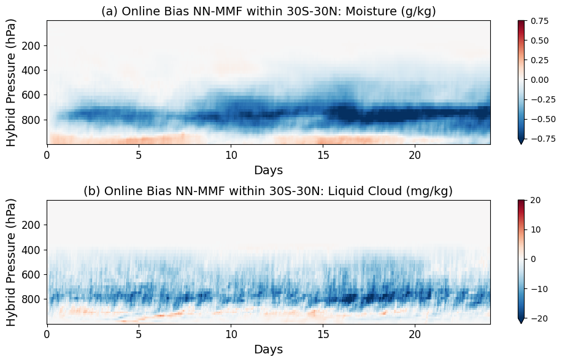
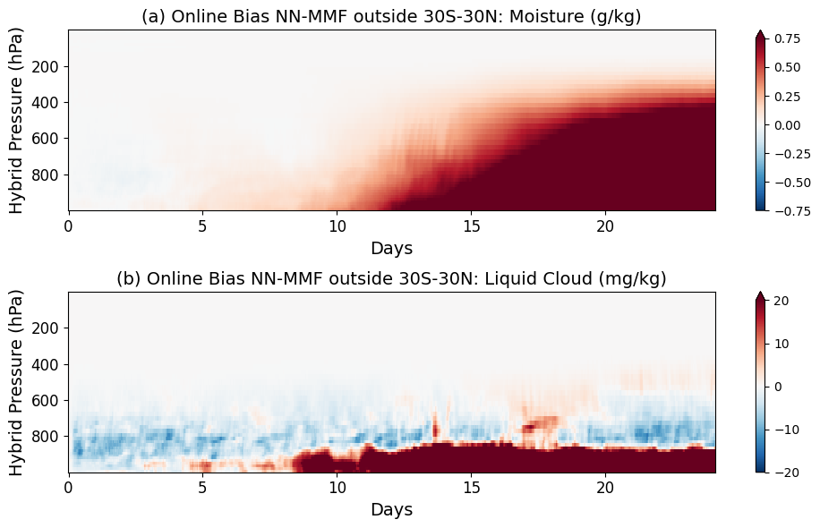
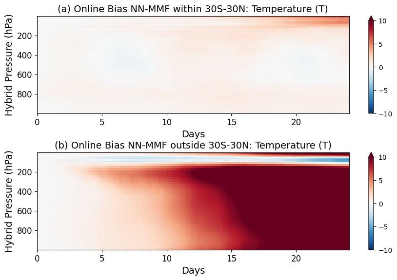
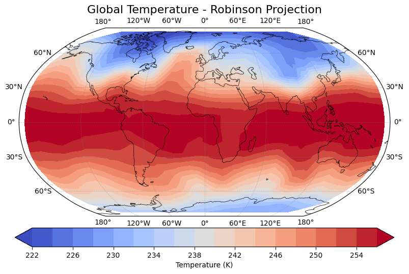
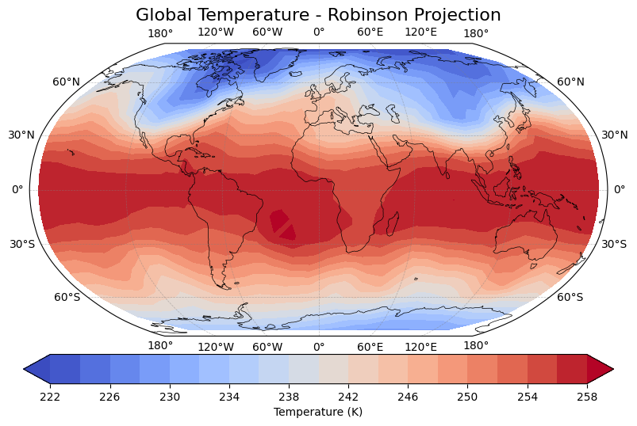
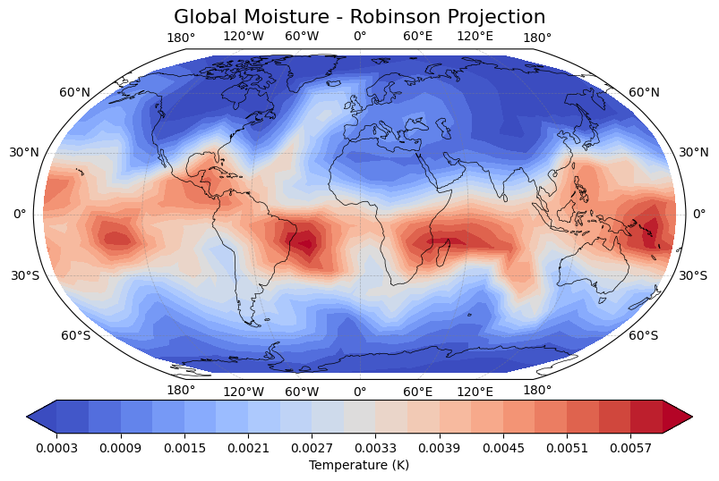
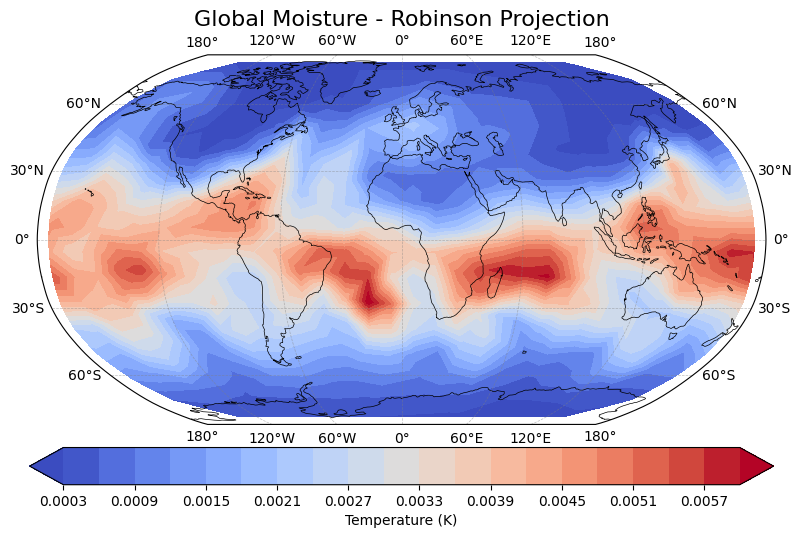
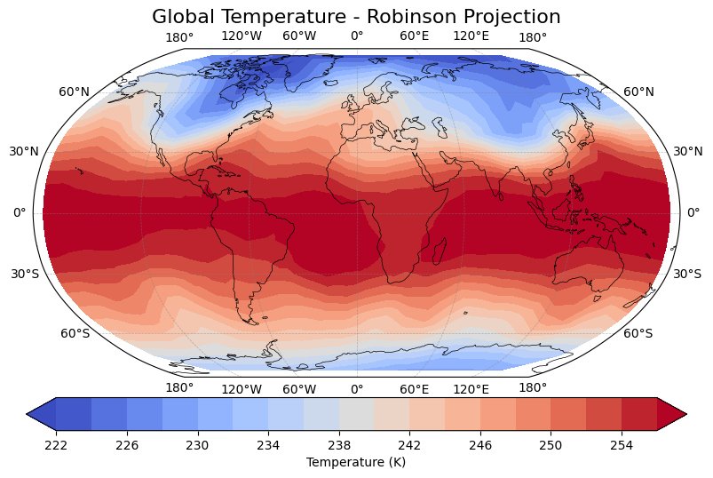
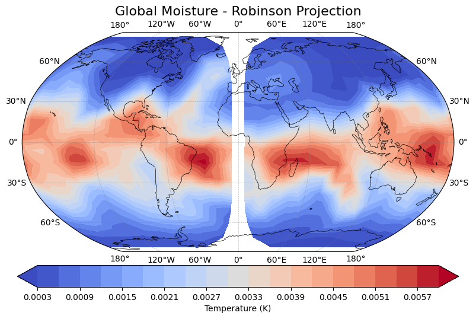
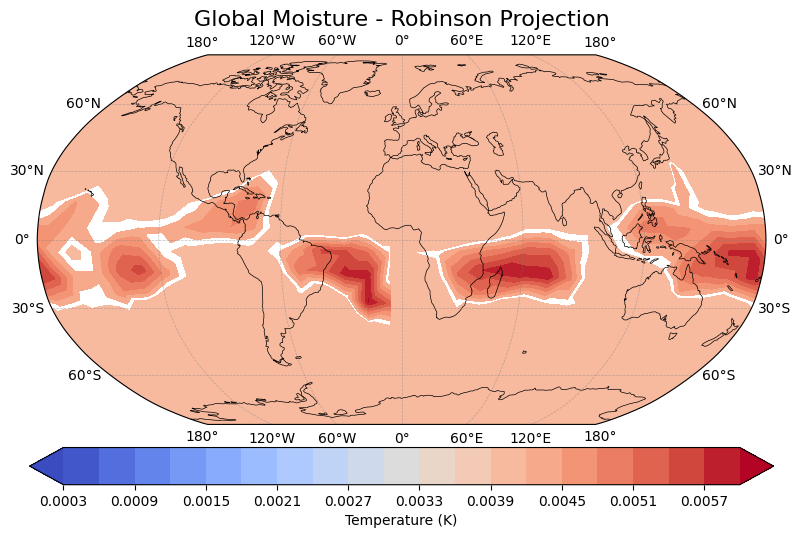

!pwd
/global/cfs/cdirs/m4334/jerry/climsim3_dev/online_testing/baseline_models/resLSTM/training
import xarray as xr
import numpy as np
import matplotlib.pyplot as plt
import pandas as pd
import glob
import cartopy.crs as ccrs
import cartopy.feature as cfeature
from datetime import datetime
# def add_time_dim(xda):
# xda = xda.expand_dims(time = [datetime.now()])
# return xda
# # /pscratch/sd/j/jerrylin/coupled_output/debug/debug_run/run
# ds_mli = xr.open_mfdataset('/pscratch/sd/j/jerrylin/coupled_output/debug/debug_run/run/remap_run.eam.mli.*.nc', preprocess = add_time_dim)
# ds_mlis = xr.open_mfdataset('/pscratch/sd/j/jerrylin/coupled_output/debug/debug_run/run/remap_run.eam.mlis.*.nc', preprocess = add_time_dim)
# ds_mlo = xr.open_mfdataset('/pscratch/sd/j/jerrylin/coupled_output/debug/debug_run/run/remap_run.eam.mlo.*.nc', preprocess = add_time_dim)
# ds_mlos = xr.open_mfdataset('/pscratch/sd/j/jerrylin/coupled_output/debug/debug_run/run/remap_run.eam.mlos.*.nc', preprocess = add_time_dim)
# ds_mli['time'] = ds_mlos['time']
# ds_mlis['time'] = ds_mlos['time']
# ds_mlo['time'] = ds_mlos['time']
# ds_mli_before = ds_mli.isel(time = slice(0,5))
# ds_mlis_before = ds_mlis.isel(time = slice(0,5))
# ds_mlo_before = ds_mlo.isel(time = slice(0,5))
# ds_mlos_before = ds_mlos.isel(time = slice(0,5))
# ds_mli_after = ds_mli.isel(time = slice(5,10))
# ds_mlis_after = ds_mlis.isel(time = slice(5,10))
# ds_mlo_after = ds_mlo.isel(time = slice(5,10))
# ds_mlos_after = ds_mlos.isel(time = slice(5,10))
grid_info = xr.open_dataset('/global/cfs/cdirs/m4334/jerry/climsim3_dev/grid_info/ClimSim_low-res_grid-info.nc')
lon = grid_info['lon'].values
lat = grid_info['lat'].values
lon = ((lon + 180) % 360) - 180
ds_grid = xr.open_dataset('/global/cfs/cdirs/m4334/jerry/climsim3_dev/grid_info/ClimSim_low-res_grid-info.nc')
grid_area = ds_grid['area']
ds_nn = xr.open_mfdataset('/pscratch/sd/j/jerrylin/coupled_output/finetune_long/finetune_long_run/run/finetune_long_run.eam.h2.*.nc')
ds_sp = xr.open_mfdataset('/pscratch/sd/j/jerrylin/coupled_output/mmf_ref/mmf_ref_run/mmf_ref_1230_quick.eam.h2.*.nc')
def zonal_mean_area_weighted(data, grid_area, lat):
# Define latitude bins ranging from -90 to 90, each bin spans 10 degrees
bins = np.arange(-90, 91, 10) # Create edges for 10 degree bins
# Get indices for each lat value indicating which bin it belongs to
bin_indices = np.digitize(lat.values, bins) - 1
# Initialize a list to store the zonal mean for each latitude bin
data_zonal_mean = []
# Iterate through each bin to calculate the weighted average
for i in range(len(bins)-1):
# Filter data and grid_area for current bin
mask = (bin_indices == i)
data_filtered = data[mask]
grid_area_filtered = grid_area[mask]
# Check if there's any data in this bin
if data_filtered.size > 0:
# Compute area-weighted average for the current bin
weighted_mean = np.average(data_filtered, axis=0, weights=grid_area_filtered)
else:
# If no data in bin, append NaN or suitable value
weighted_mean = np.nan
# Append the result to the list
data_zonal_mean.append(weighted_mean)
# Convert list to numpy array
data_zonal_mean = np.array(data_zonal_mean)
# The mid points of the bins are used as the representative latitudes
lats_mid = bins[:-1] + 5
return data_zonal_mean, lats_mid
# ds2 = xr.open_dataset(data_path + 'data_grid/E3SM_ML.GNUGPU.F2010-MMF1.ne4pg2_ne4pg2.eam.h0.0001-01.nc')
lat = ds_grid.lat
lon = ds_grid.lon
level = ds_grid.lev.values
def zonal_mean(var):
var_re = var.reshape(-1,384,var.shape[-1])
var_re = np.transpose(var_re, (1,0,2))
var_zonal_mean, lats_sorted = zonal_mean_area_weighted(var_re, grid_area, lat)
return var_zonal_mean, lats_sorted
var = 'Q'
var_sp = ds_sp[var]
var_nn = ds_nn[var]
var_sp_re = np.transpose(var_sp.values, (2,0,1))
var_sp_zonal_mean, lats_sorted = zonal_mean_area_weighted(var_sp_re, grid_area, lat)
var_nn_re = np.transpose(var_nn.values, (2,0,1))
var_nn_zonal_mean, lats_sorted = zonal_mean_area_weighted(var_nn_re, grid_area, lat)
# average in tropics
var_sp_trop = var_sp_zonal_mean[6:12].mean(axis=0)
var_nn_trop = var_nn_zonal_mean[6:12].mean(axis=0)
data_sp = xr.DataArray(var_sp_trop.T, dims=["level", "time"],
coords={"level": level, "time": np.arange(len(ds_sp.time))/24.})
data_nn = xr.DataArray(var_nn_trop.T, dims=["level", "time"],
coords={"level": level, "time": np.arange(len(ds_nn.time))/24.})
bias_q= (data_nn-data_sp)
var = 'CLDLIQ'
var_sp = ds_sp[var]
var_nn = ds_nn[var]
var_sp_re = np.transpose(var_sp.values, (2,0,1))
var_sp_zonal_mean, lats_sorted = zonal_mean_area_weighted(var_sp_re, grid_area, lat)
var_nn_re = np.transpose(var_nn.values, (2,0,1))
var_nn_zonal_mean, lats_sorted = zonal_mean_area_weighted(var_nn_re, grid_area, lat)
# average in tropics
var_sp_trop = var_sp_zonal_mean[6:12].mean(axis=0)
var_nn_trop = var_nn_zonal_mean[6:12].mean(axis=0)
data_sp = xr.DataArray(var_sp_trop.T, dims=["level", "time"],
coords={"level": level, "time": np.arange(len(ds_sp.time))/24.})
data_nn = xr.DataArray(var_nn_trop.T, dims=["level", "time"],
coords={"level": level, "time": np.arange(len(ds_nn.time))/24.})
bias_qc= (data_nn-data_sp)
# Prepare the figure and axes
fig, axes = plt.subplots(nrows=2, ncols=1, figsize=(10, 6))
ax = axes[0]
(bias_q*1e3).plot(ax=ax, vmin = -.75, vmax = .75, cmap = 'RdBu_r')
ax.invert_yaxis()
# ax.set_xlim(0, 5)
ax.set_title('(a) Online Bias NN-MMF within 30S-30N: Moisture (g/kg)',fontsize=14)
ax.set_xlabel('Days',fontsize=14)
ax.set_ylabel('Hybrid Pressure (hPa)',fontsize=14)
ax.tick_params(axis='both', which='major', labelsize=12)
ax = axes[1]
(bias_qc*1e6).plot(ax=ax, vmin = -20, vmax = 20, cmap = 'RdBu_r')
ax.invert_yaxis()
# ax.set_xlim(0, 5)
ax.set_title('(b) Online Bias NN-MMF within 30S-30N: Liquid Cloud (mg/kg)',fontsize=14)
ax.set_xlabel('Days',fontsize=14)
ax.set_ylabel('Hybrid Pressure (hPa)',fontsize=14)
ax.tick_params(axis='both', which='major', labelsize=12)
plt.tight_layout()
# plt.savefig('/global/homes/z/zeyuanhu/notebooks/james-plots/error-growth.pdf', format='pdf', dpi=300, bbox_inches='tight')
# plt.tight_layout()
plt.show()

var = 'Q'
var_sp = ds_sp[var]
var_nn = ds_nn[var]
var_sp_re = np.transpose(var_sp.values, (2,0,1))
var_sp_zonal_mean, lats_sorted = zonal_mean_area_weighted(var_sp_re, grid_area, lat)
var_nn_re = np.transpose(var_nn.values, (2,0,1))
var_nn_zonal_mean, lats_sorted = zonal_mean_area_weighted(var_nn_re, grid_area, lat)
# average in extropics
var_sp_trop = var_sp_zonal_mean[np.r_[0:6, 12:18]].mean(axis=0)
var_nn_trop = var_nn_zonal_mean[np.r_[0:6, 12:18]].mean(axis=0)
data_sp = xr.DataArray(var_sp_trop.T, dims=["level", "time"],
coords={"level": level, "time": np.arange(len(ds_sp.time))/24.})
data_nn = xr.DataArray(var_nn_trop.T, dims=["level", "time"],
coords={"level": level, "time": np.arange(len(ds_nn.time))/24.})
bias_q = (data_nn-data_sp)
var = 'CLDLIQ'
var_sp = ds_sp[var]
var_nn = ds_nn[var]
var_sp_re = np.transpose(var_sp.values, (2,0,1))
var_sp_zonal_mean, lats_sorted = zonal_mean_area_weighted(var_sp_re, grid_area, lat)
var_nn_re = np.transpose(var_nn.values, (2,0,1))
var_nn_zonal_mean, lats_sorted = zonal_mean_area_weighted(var_nn_re, grid_area, lat)
# average in extropics
var_sp_trop = var_sp_zonal_mean[np.r_[0:6, 12:18]].mean(axis=0)
var_nn_trop = var_nn_zonal_mean[np.r_[0:6, 12:18]].mean(axis=0)
data_sp = xr.DataArray(var_sp_trop.T, dims=["level", "time"],
coords={"level": level, "time": np.arange(len(ds_sp.time))/24.})
data_nn = xr.DataArray(var_nn_trop.T, dims=["level", "time"],
coords={"level": level, "time": np.arange(len(ds_nn.time))/24.})
bias_qc= (data_nn-data_sp)
# Prepare the figure and axes
fig, axes = plt.subplots(nrows=2, ncols=1, figsize=(10, 6))
ax = axes[0]
(bias_q*1e3).plot(ax=ax, vmin = -.75, vmax = .75, cmap = 'RdBu_r')
ax.invert_yaxis()
# ax.set_xlim(0, 5)
ax.set_title('(a) Online Bias NN-MMF outside 30S-30N: Moisture (g/kg)',fontsize=14)
ax.set_xlabel('Days',fontsize=14)
ax.set_ylabel('Hybrid Pressure (hPa)',fontsize=14)
ax.tick_params(axis='both', which='major', labelsize=12)
ax = axes[1]
(bias_qc*1e6).plot(ax=ax, vmin = -20, vmax = 20, cmap = 'RdBu_r')
ax.invert_yaxis()
# ax.set_xlim(0, 5)
ax.set_title('(b) Online Bias NN-MMF outside 30S-30N: Liquid Cloud (mg/kg)',fontsize=14)
ax.set_xlabel('Days',fontsize=14)
ax.set_ylabel('Hybrid Pressure (hPa)',fontsize=14)
ax.tick_params(axis='both', which='major', labelsize=12)
plt.tight_layout()
# plt.savefig('/global/homes/z/zeyuanhu/notebooks/james-plots/error-growth.pdf', format='pdf', dpi=300, bbox_inches='tight')
# plt.tight_layout()
plt.show()

var = 'T'
var_sp = ds_sp[var]
var_nn = ds_nn[var]
var_sp_re = np.transpose(var_sp.values, (2,0,1))
var_sp_zonal_mean, lats_sorted = zonal_mean_area_weighted(var_sp_re, grid_area, lat)
var_nn_re = np.transpose(var_nn.values, (2,0,1))
var_nn_zonal_mean, lats_sorted = zonal_mean_area_weighted(var_nn_re, grid_area, lat)
# average in tropics
var_sp_trop = var_sp_zonal_mean[6:12].mean(axis=0)
var_nn_trop = var_nn_zonal_mean[6:12].mean(axis=0)
data_sp = xr.DataArray(var_sp_trop.T, dims=["level", "time"],
coords={"level": level, "time": np.arange(len(ds_sp.time))/24.})
data_nn = xr.DataArray(var_nn_trop.T, dims=["level", "time"],
coords={"level": level, "time": np.arange(len(ds_nn.time))/24.})
bias_t_tropics = (data_nn-data_sp)
var_sp_trop = var_sp_zonal_mean[np.r_[0:6, 12:18]].mean(axis=0)
var_nn_trop = var_nn_zonal_mean[np.r_[0:6, 12:18]].mean(axis=0)
data_sp = xr.DataArray(var_sp_trop.T, dims=["level", "time"],
coords={"level": level, "time": np.arange(len(ds_sp.time))/24.})
data_nn = xr.DataArray(var_nn_trop.T, dims=["level", "time"],
coords={"level": level, "time": np.arange(len(ds_nn.time))/24.})
bias_t_extratropics = (data_nn-data_sp)
# Prepare the figure and axes
fig, axes = plt.subplots(nrows=2, ncols=1, figsize=(10, 6))
ax = axes[0]
bias_t_tropics.plot(ax=ax, vmin = -10, vmax = 10, cmap = 'RdBu_r')
ax.invert_yaxis()
# ax.set_xlim(0, 5)
ax.set_title('(a) Online Bias NN-MMF within 30S-30N: Temperature (T)',fontsize=14)
ax.set_xlabel('Days',fontsize=14)
ax.set_ylabel('Hybrid Pressure (hPa)',fontsize=14)
ax.tick_params(axis='both', which='major', labelsize=12)
ax = axes[1]
bias_t_extratropics.plot(ax=ax, vmin = -10, vmax = 10, cmap = 'RdBu_r')
ax.invert_yaxis()
# ax.set_xlim(0, 5)
ax.set_title('(b) Online Bias NN-MMF outside 30S-30N: Temperature (T)',fontsize=14)
ax.set_xlabel('Days',fontsize=14)
ax.set_ylabel('Hybrid Pressure (hPa)',fontsize=14)
ax.tick_params(axis='both', which='major', labelsize=12)
# plt.tight_layout()
plt.subplots_adjust(left=0.1, right=0.9, top=0.9, bottom=0.1, wspace=0.4, hspace=0.4)
plt.show()

ds_nn['T']
<xarray.DataArray 'T' (time: 579, lev: 60, ncol: 384)>
dask.array<concatenate, shape=(579, 60, 384), dtype=float32, chunksize=(1, 60, 384), chunktype=numpy.ndarray>
Coordinates:
* lev (lev) float64 0.07835 0.1411 0.2529 0.4493 ... 963.6 978.0 992.6
* time (time) object 0002-12-30 01:00:00 ... 0003-01-23 03:00:00
Dimensions without coordinates: ncol
Attributes:
mdims: 1
units: K
long_name: Temperature
standard_name: air_temperature
cell_methods: time: pointds_nn['T'].shape
(579, 60, 384)
ds_nn['hybi'].shape
(579, 61)
grid_info['hybi'].values[:, np.newaxis, np.newaxis].shape
(61, 1, 1)
pressure_grid_p1 = np.array(grid_info['P0']*grid_info['hyai'])[np.newaxis,:,np.newaxis]
pressure_grid_p2 = grid_info['hybi'].values[np.newaxis,:,np.newaxis] * np.ones((1,61,384))*100000
pressure_grid_val = pressure_grid_p1 + pressure_grid_p2
dp_val = pressure_grid_val[:,1:61,:] - pressure_grid_val[:,0:60,:]
pressure_weights = dp_val/np.sum(dp_val, axis = 1)[:, np.newaxis, :]
nn_pressure_weighted_T = np.sum(ds_nn['T']*pressure_weights, axis = 1)
nn_pressure_weighted_Q = np.sum(ds_nn['Q']*pressure_weights, axis = 1)
sp_pressure_weighted_T = np.sum(ds_sp['T']*pressure_weights, axis = 1)
sp_pressure_weighted_Q = np.sum(ds_sp['Q']*pressure_weights, axis = 1)
sp_pressure_weighted_T.shape
(791, 384)
nn_pressure_weighted_T.shape
(579, 384)
lon.shape
(384,)
lat.shape
(384,)
def plot_map(values, title_text):
# Create a figure and axis with a Robinson projection
fig, ax = plt.subplots(
subplot_kw={'projection': ccrs.Robinson()}, figsize=(12, 6)
)
# Add filled contours to the map
contour = ax.tricontourf(
lon, lat, values,
transform=ccrs.PlateCarree(), # Data is in lat-lon coordinates
cmap='coolwarm', # Adjust colormap as needed
levels=20, # Number of contour levels
extend='both' # Extend beyond data range
)
# Add features like coastlines and borders
ax.coastlines(linewidth=0.5, color='black')
# Add a colorbar
cbar = plt.colorbar(contour, ax=ax, orientation='horizontal', pad=0.05, shrink=0.8)
cbar.set_label('Temperature (K)') # Adjust label to match your data
# Set title
ax.set_title('Global ' + title_text + ' - Robinson Projection', fontsize=16)
ax.set_global()
ax.gridlines(draw_labels=True, linewidth=0.5, color='gray', alpha=0.5, linestyle='--')
# Show the plot
plt.show()
ds_nn['T'][0].shape
(60, 384)
plot_map(nn_pressure_weighted_T[0], 'Temperature')

plot_map(nn_pressure_weighted_T[46], 'Temperature')

plot_map(nn_pressure_weighted_Q[0], 'Moisture')

plot_map(nn_pressure_weighted_Q[46], 'Moisture')

plot_map(sp_pressure_weighted_T[0], 'Temperature')
plot_map(sp_pressure_weighted_T[46], 'Temperature')

plot_map(sp_pressure_weighted_Q[0], 'Moisture')

plot_map(sp_pressure_weighted_Q[46], 'Moisture')
